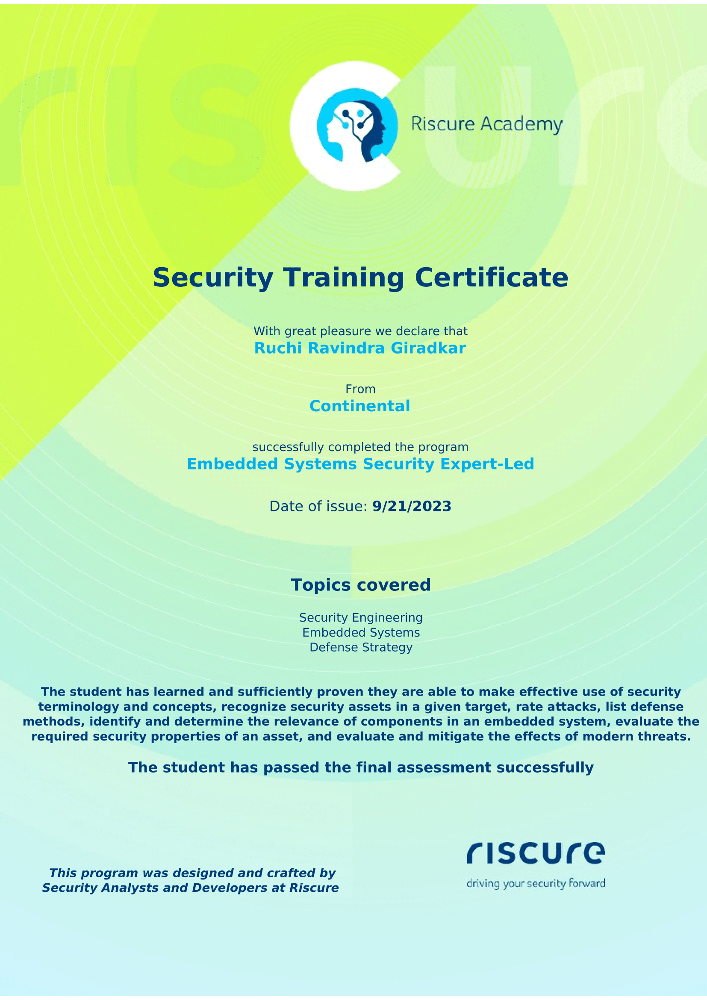

Work
Security & Privacy Specialist — Continental Automotive Technologies GmbH
Regensburg, Germany • Jul 2021 – Jan 2025
- Performed TARA with ANSYS Medini Analyze per ISO/SAE 21434 & UN ECE R155; implemented targeted controls for embedded automotive systems.
- Designed/validated security architectures and concept documents aligned to customer requirements and international standards.
- Collaborated with stakeholders/suppliers to integrate cybersecurity through the development lifecycle.
Master Thesis Project — Robert Bosch GmbH
Stuttgart, Germany • Jul 2020 – Dec 2020
- Built a digital twin–based IDS with Docker to improve monitoring, modularity, and threat visibility in Industry 4.0 environments.
- Developed detection mechanisms for malicious activity in industrial IoT networks.
- Automated alerts and response workflows using Shell & Python scripting.

Bilingual Assistant Application Developer — Fujitsu Consulting India
Feb 2016 – Feb 2019
- Developed UI platforms for mobile applications and multi-channel interactions.
- Interpreted Japanese design/technical documentation to produce efficient, standards-compliant code.
- Enhanced systems by adding new JavaScript functionality.

Trainee — NTT DATA
Pune, India • Jun 2015 – Mar 2016
- Completed Java development training (OOP, application design fundamentals).
- Completed Japanese language training (JLPT N4).

Cyber Security Bootcamp
2025
- 16-week program: IT fundamentals, advanced cybersecurity, and risk frameworks (NIST, ISO, GDPR).
- Capstone Threat Modeling/Risk Analysis using Nmap, Metasploit, Hydra, Greenbone, DVWA, Autopsy; full VAPT + forensic report.
- Earned CompTIA A+, Security+, and CySA+.

Certifications



About
Cybersecurity professional with 3+ years of cross-domain experience in automotive and IT security, skilled in threat and risk analysis, vulnerability management, and secure architecture design. Former Security & Privacy Specialist at Continental Automotive, with hands-on expertise in aligning cybersecurity controls to automotive security standards. Holds a Master’s degree in Mechatronic and Cyber-Physical Systems from the Deggendorf Institute of Technology, where I developed a Digital Twin Based Intrusion Detection System (IDS) using Docker at Robert Bosch Stuttgart as part of my master’s thesis, providing a strong foundation in embedded systems security and Industry 4.0 resilience.
Enhanced my IT security expertise through a Cyber Security Bootcamp, completing a VAPT project using tools such as Nmap, Greenbone, Metasploit, and Autopsy, and earning CompTIA A+, Security+, and CySA+ certifications. Combines a background in software development with global experience across India, Japan, and Germany, and proficiency in Japanese language with developing German language skills, focused on designing resilient and compliant cybersecurity solutions.
Education
- M.Eng. Mechatronic & Cyber-Physical Systems — Deggendorf Institute of Technology (Campus Cham) • 03/2019–03/2021 • Grade: 1.9
- Major: Cyber-physical systems, VR/AR & IoT, Additive manufacturing • Case studies: Warehouse Automation, Digital Twinning, VR application.
- B.Eng. Electronics & Telecommunication — Cummins College of Engineering for Women, Nagpur • 06/2011–05/2015
- Major: Communications Engineering, Signals and Systems, Microprocessors and Computing Devices.
Skills
- Cybersecurity Tools & Techniques: VAPT, TARA, Vulnerability & Attack Path Analysis, Security Architecture Design, Incident Response & Forensic Analysis
- Tools: Nmap, Wireshark, Greenbone, Metasploit, Hydra, DVWA, Autopsy, ANSYS Medini Analyze, Visual Studio
- Frameworks/Standards/Compliance: ISO 27001, ISO/SAE 21434, NIST, GDPR, UN ECE R155
- Networking/Monitoring/System Security: TCP/IP, Firewalls, IDS/IPS, VPNs, Prometheus, Grafana, Docker, Secure System Configuration & Hardening
- Development & Automation: Kali Linux, Python automation, PowerShell, Shell/Bash
- Version Control & PM: Git, GitLab, SVN, Jira
Languages
English; Japanese (JLPT N3); German (B1 – in progress); Hindi; Marathi.

Contact
LinkedIn: in/ruchi-giradkar
GitHub: github.com/RuchiGiradkar